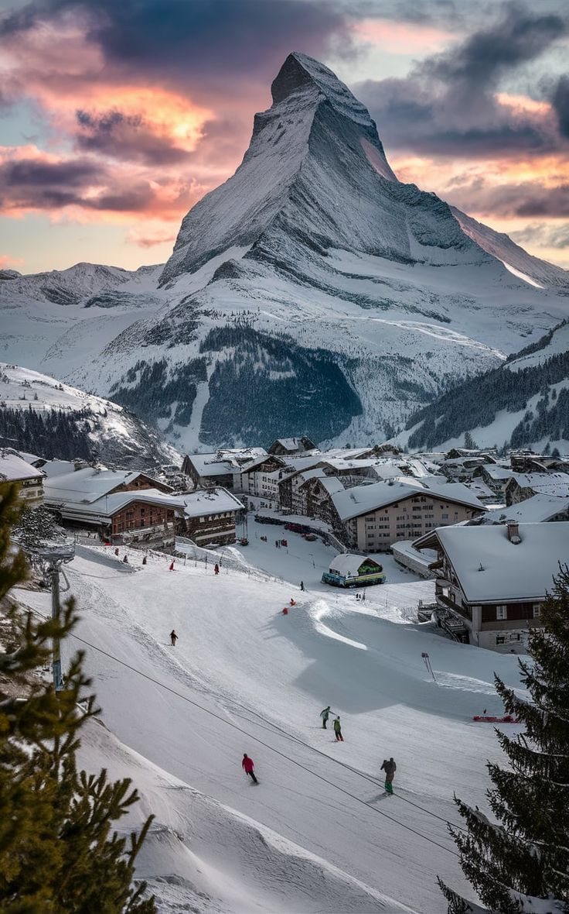
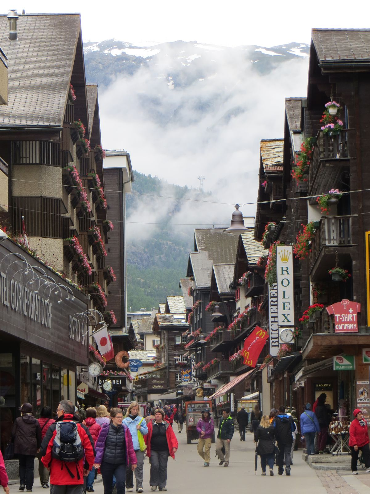
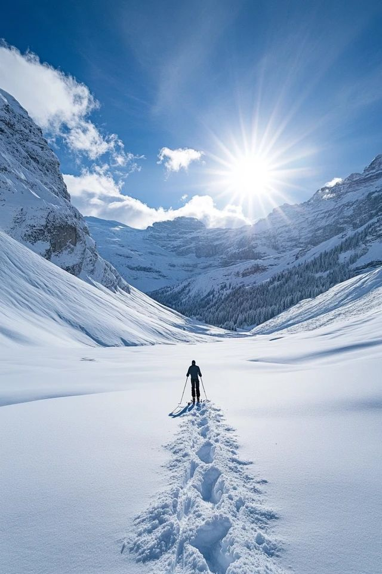

Gusto kong mag-visit sa Switzerland dahil sa kanilang breathtaking Alpine landscapes, world-class ski resorts, at charming mountain villages. I want to experience ang makita ang majestic na Matterhorn, ang malamig na simoy ng hangin sa snow-covered valley, at ang luxury ng Zermatt village life.

Gusto kong mag-visit sa Switzerland dahil sa kaniyang charming mountain villages, car-free environment, at luxury alpine lifestyle. I want to experience ang paglalakad sa mga traditional Swiss chalets, ang cozy na atmosphere ng isang snow-covered valley, at ang walang katulad na view ng Matterhorn.

Gusto kong mag-visit sa Switzerland dahil sa kaniyang breathtaking mountain ranges, world-class winter sports, at scenic nature trails. I want to experience ang makita ang mga snow-capped peaks, ang sariwang hangin sa high-altitude glaciers, at ang nakaka-relax na view ng alpine lakes.
